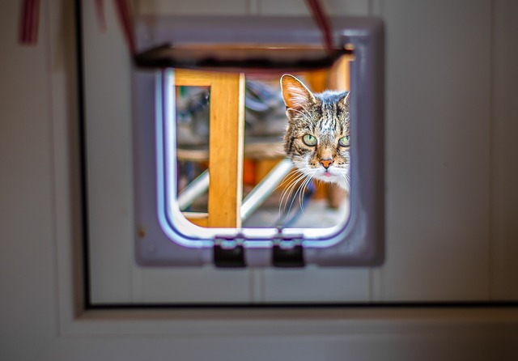

Кішки все ж люблять господарів, але не так, як нам цього хочеться. Найімовірніше, доведеться підлаштуватися під свого кота, а не навпаки.

Люди не так багато знають про котів, попри те що це одна з
найпоширеніших домашніх тварин. З їхньої поведінки часто непросто
зрозуміти, наскільки вони привʼязані до своїх господарів, чого вони
хочуть, що їх засмучує і чи переживають вони взагалі.Може, кішкам від
нас потрібна лише їжа й тепле місце, де можна поспати?
Коли вони
розкидають усе в домі після того, як ми з нього виходимо, то роблять
це навмисне, аби нас роздратувати? Як зрозуміти, що кішка нещасна? Чи
сумує вона за господарем, поки його немає вдома? Ці питання
журналістка The Guardian та господиня двох котів Сірін Кейл поставила
фахівцям, які вивчають поведінку котів. «Бабель» переказує її матеріал
про останні дослідження в цій галузі і про те, чого ми можемо
повчитися у цих тварин.
Уважно потрібно спостерігати за кішкою тим, у кого в будинку є хворі
- Якщо тварина нервує і нявкає біля хворого, то про одужання поки годі й думати.
-
якщо кішка наполегливо лягає на одне і те ж місце
- на голову,
- на груди,
- живіт
- Якщо тварина нервує і нявкає біля хворого, то про одужання поки годі й думати.
- Якщо ж кішка йде з дому, а хворий починає різко йти на поправку, то значить, що тварина забрала хворобу на себе.
Цікаві факти
Цікаві факти про котів. Цікаві факти про котів та котиків Zooera Як співається в одній відомій пісні, «коти не схожі на людей, коти – це коти». Ось уже 10 тисяч років ці пухнасті створіння дивують своїх господарів. Ми зібрали факти про кішок, які, напевно, здадуться вам цікавими:
- Малюнок на носі кожної кішки неповторний, як відбитки пальців у людини.
- к пише видання American Demographics, лише 1996 року в Америці було 68 мільйонів кішок. Всі разом вони позіхають понад 200 мільйонів разів на годину.
- У 2017 році у США налічується 95 мільйонів кішок.
- Коли кішка витирається, вона відзначає своїх людей. Так само вони мітять територію запахом залоз навколо мордочки.
Наукові факти про кішок та котів
- У світі живе понад 500 мільйонів домашніх котів. Австралія вважається "котячою" країною - тут майже в кожному будинку живе кішка.
- Мозок кішок ближче до людського page.
- На рік кішка народжує близько 100 кошенят. Рекорд 1952 року встановила кішечка Дасті, яка народила 420 кошенят
- Пус була визнана найстарішою кішечкою. Вона прожила в Англії тридцять шість років.
- Кішки не спілкуються між собою за допомогою нявкання. При цьому вони видають понад сто звуків, тоді як собаки – десять
- Кішки муркотять, бо вібрують їхні голосові зв'язки у горлі. Так м'язи гортані відкривають та закривають прохід повітря близько 25 разів на секунду.
- Кішки по-іншому бачать кольори. Наприклад, трава їм червона. У той же час, котячий зір у темряві кращий за людський.
- Найбагатша кішка на прізвисько Блекі отримала у спадок від господаря 15 мільйонів фунтів стерлінгів.
- Серце кішки б'ється в середньому сто десять разів на хвилину, що вдвічі швидше за людське.